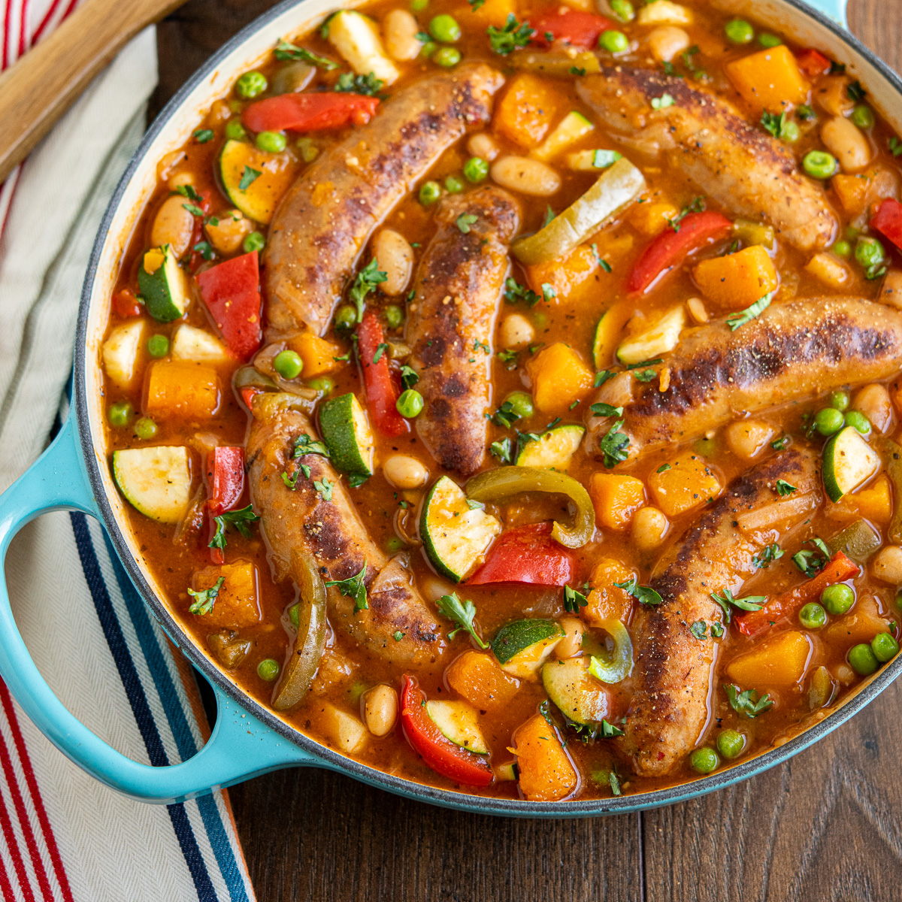

Vegan Sausage Casserole

A family favourite vegan alternative
THis is a hearty family favourite to keep you warm on a winter's day.
Ingredients
- 6 x vegan sausages
- 3 x red peppers
- 2 x carrots
- 4 x cloves of garlic
- 2 x tins (400g) chopped tomatoes
- 200g of lean green beans
Method
- First, brown the sausages in the oven at 180c for 10 minutes
- Next, add the vegetables to a frying pan, seasons and cook over a medium head until soft.
- Add, the vegetables, sausages, chopped tomatoes and stock to a casserole dish.
- Bake on a high head in the centre of the oven for 50 minutes.
- Serve with bread or mashed potatoes.